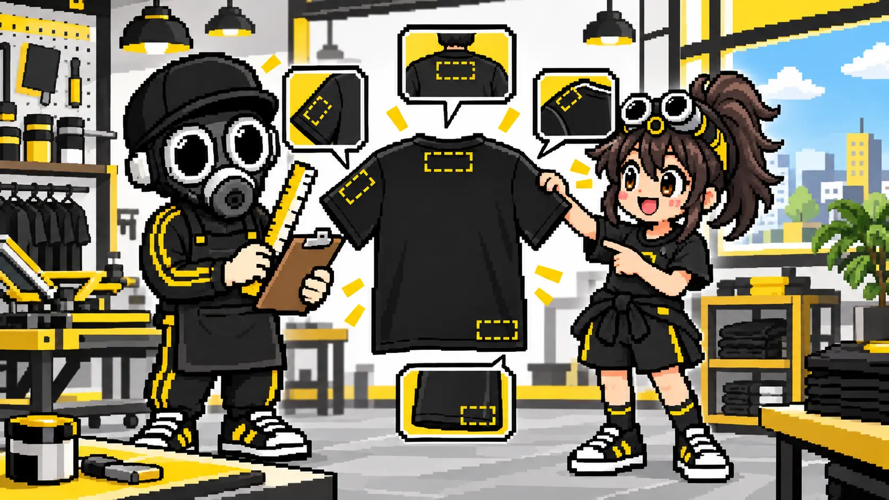
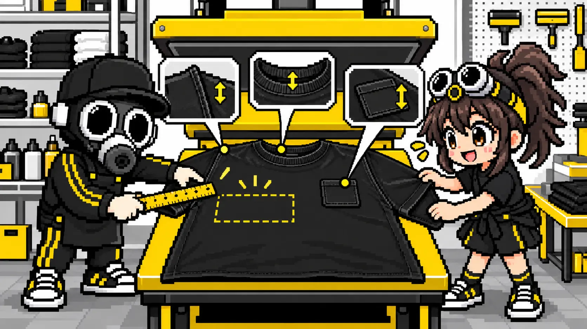
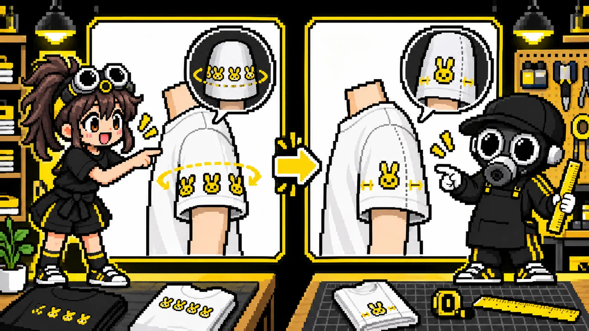
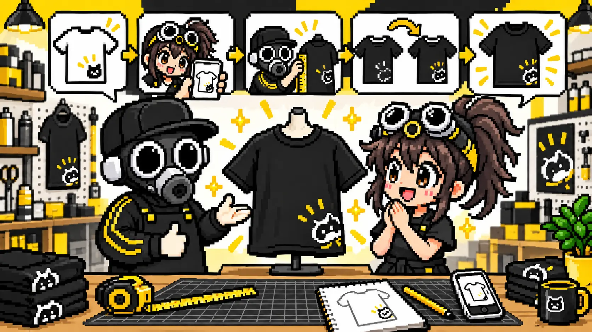

特殊な位置でも、まずは相談してください
袖口、肩、背中の襟下、裾、ポケット付近など、定番から少し外れた位置にもプリントできる場合があります。ただし、ウェアの縫い目や形、プリント方法、機械へセットできる範囲によって条件は変わります。
希望どおりの位置が難しいときも、すぐに「できません」で終わりではありません。位置を少し動かす、絵柄を小さくする、縫い目を避ける、別の加工方法を選ぶなど、イメージをできるだけ残せる方法を一緒に探します。


「ここに入れたい」という完成イメージが出発点です。技術的な条件はこちらで確認するので、専門用語が分からなくても大丈夫です。
なぜ位置によって難しさが変わるの？
多くのプリント方法では、ウェアを台の上へできるだけ平らに置き、インクや転写シートへ均一に圧力をかけます。襟、縫い目、ポケット、ファスナーなどの厚みが近くにあると、台に平らに置けなかったり、圧力が均一に伝わりにくくなったりします。

ウェアを平らに置けるか
曲面や段差がある位置では、絵柄の欠け・ずれ・圧着不足につながることがあります。
機械や版が入る空間があるか
袖や小さなパーツは、使用する台や機械の大きさによって加工範囲が変わります。
熱や圧力に耐えられるか
素材、ボタン、ファスナー、装飾によって、適した加工方法が変わります。
対応範囲はプリント方式・設備・ウェアの仕様で異なります。同じ「袖プリント」でも、ボディを確認してからの判断になります。
特殊なプリント位置と実現しやすくする工夫
袖の見える面に絵柄を収め、袖下の縫い目や袖口の縫製から離すと加工しやすくなります。袖の長さやサイズで使える範囲が変わります。
肩線や袖付けの縫い目、曲面を避けます。絵柄を少し内側へ移す、サイズを小さくする方法を検討します。
襟のリブや縫い目から距離を取り、背中の平らな面へ配置します。サイズごとに襟の形が違うため、位置にわずかな個体差が出る場合があります。
裾の折り返しや脇線を避けて配置します。着用時の見え方も確認し、必要なら少し上へ移動します。
ポケットの段差を避けられる位置へ動かすほか、専用の小さな台や当て材を使える場合があります。ポケット自体への加工は大きさに制限があります。
段差で仕上がりが不安定になりやすいため、絵柄を分ける、縮小する、位置をずらす、対応できる別方式を探す方法があります。
「袖を一周させたい」から始まった位置調整
実際の相談では、模様を袖の周囲へ一周させたいという希望がありました。しかし通常の転写では、袖下の縫い目をまたいで均一に圧着することが難しく、ずれや欠けのリスクがあります。

ご希望に近づけるための調整例
見せたい雰囲気と図柄の意味を確認。
そのまま加工した場合のリスクを説明。
模様を収まる大きさへ整え、縫い目を避けて配置。
着用したときに模様がしっかり見える面を一緒に確認し、位置と大きさを調整することで、元のデザイン意図に近い仕上がりを目指しました。なお、全面や周回を優先する場合は、縫製前の生地へ印刷する方法など、別設備を持つ加工先が適していることもあります。
実現できる形へ近づける5つの方法
位置を数cm動かす
襟・縫い目・ポケットの段差を避け、平らに加工できる場所へ移します。
絵柄を少し小さくする
袖や肩の限られた範囲へ収め、デザインの欠けや圧着不良を防ぎます。
絵柄を分ける
縫い目をまたぐ大きなデザインを、左右や前後のパーツへ分割します。
プリント方法を変える
枚数、色数、素材、位置に応じて、DTF・シルクスクリーン・インクジェットなどから適した方法を検討します。
加工しやすいウェアを選ぶ
同じ位置でも、縫い目やポケットの形が違うボディへ変更すると実現できる場合があります。
完成イメージを見ながら、一緒に方法を考えます

ハダオジプリントの考え方
最初からプリント位置や加工方法を正確に決める必要はありません。まずは作りたいイメージを見せてください。
希望位置がそのまま加工できるかを確認し、難しい部分があれば理由を正直にお伝えします。そのうえで、位置・大きさ・プリント方法・ウェアを調整し、イメージをできるだけ残せる方法を一緒に考えます。
自社設備で希望をかなえられない場合は、無理に受注せず、適した加工方法や相談先をご案内することもあります。
相談するときに送ってほしいもの
スクリーンショットや手描きラフでも、まずはイメージ確認に使えます。
Tシャツ写真に丸や矢印を書くだけでも大丈夫です。
横幅○cm、A4程度など。分からなければ「袖いっぱい」でも構いません。
素材や形、制作枚数によって適した加工方法を検討します。
細かな位置指定がある場合は「襟の縫い目から○cm」など、基準点と距離を指定すると確認しやすくなります。指定がない場合は、完成イメージに近い位置を相談しながら決めます。
MISSION COMPLETE!
その位置、まずは見せてください
難しそうな場所でも、ウェアとデザインを確認し、実現できる方法を一緒に考えます。
特殊な位置を相談 ▶裏公式LINEで相談する▶実際のウェアプリント相談・制作経験をもとに、個人を特定できない形へ一般化して解説しています。対応範囲はプリント方式・設備・ウェアにより異なります。最終更新：2026年9月8日 運営者・編集方針